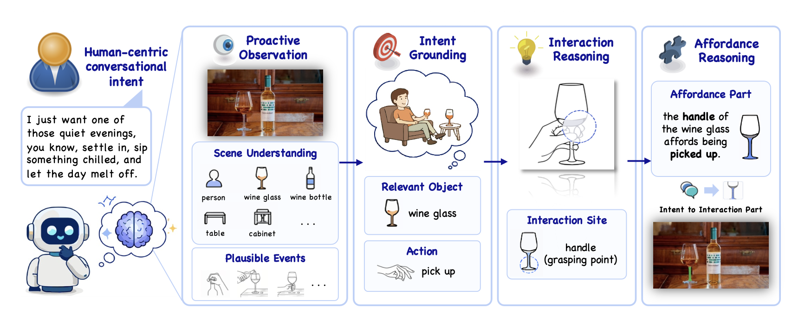
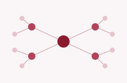
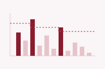
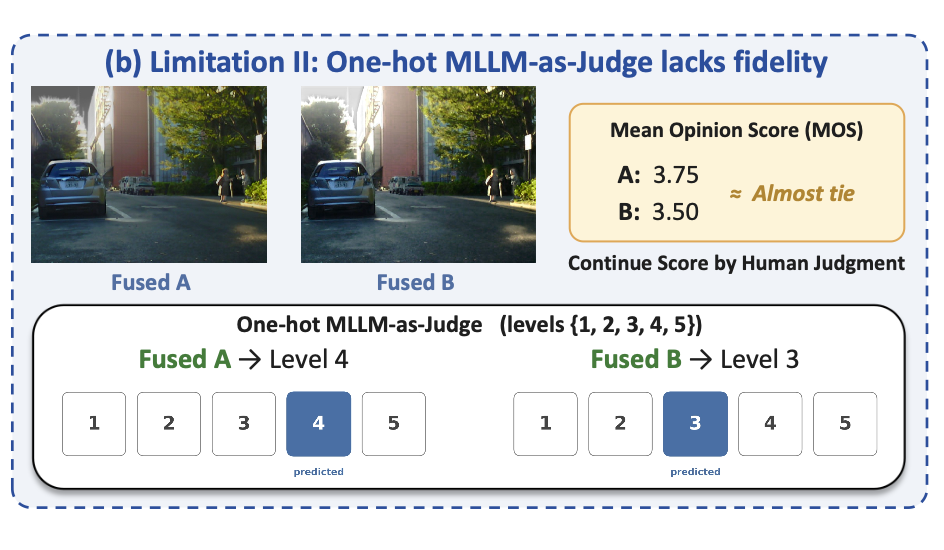
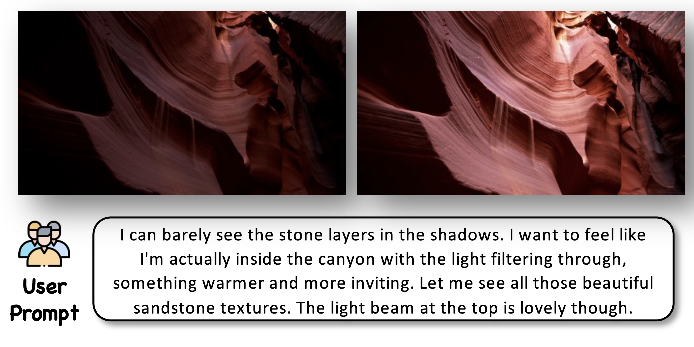
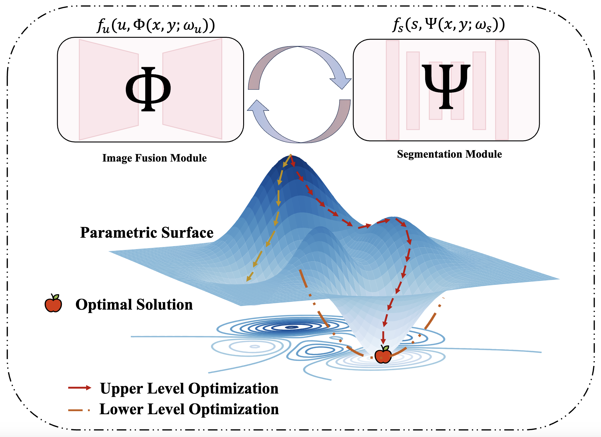

Junli Gong
Northeastern University
gong.jun@northeastern.edu ·
gongjunli0307@gmail.com
I am an MS student in Computer Science at Northeastern University (Khoury College, Seattle), graduating in December 2026. I received my BSc (Honours) in Computer Science and Technology from Beijing Normal-Hong Kong Baptist University (BNBU, formerly UIC).
At Khoury I work with Prof. Yifan Hu on speculative expert pre-dispatch for Mixture-of-Experts inference. Since 2024 I have worked with Prof. Weifeng Su at BNBU on multimodal perception and embodied agents, co-first-authoring PEAM (Findings of EMNLP 2026) and FuScore, and running the experiments for SegWorld (EMNLP 2026), FusionProxy (CVPR 2026 workshop), LumiVideo, and Fuse4Seg.
In summer 2025 I was a research intern at Pazhou Lab / South China University of Technology, advised by Prof. Lu Lu, writing Tensor Core GEMM kernels for Transformer workloads and benchmarking them against cuBLAS. In summer 2026 I was an AI Infra intern at iFLYTEK, adapting speech models to heterogeneous domestic AI accelerators. Earlier, I co-first-authored a WASA 2025 paper on clustered federated learning with Prof. Jianxiong Guo at Beijing Normal University, Zhuhai, and worked with Dr. Nian Xia at Nanjing Normal University on ML-based malicious traffic detection (AsiaJCIS 2024).
I will present SegWorld (oral) and PEAM (poster) at EMNLP 2026 in November.
Research
Interest
Interest
I work on efficient systems for large multimodal and Mixture-of-Experts models — inference runtimes, GPU kernels, and heterogeneous accelerators.
Building multimodal perception and embodied-agent models taught me what these workloads look like; the systems work is about making them run fast without changing what they compute.
LLM Inference Systems
GPU Kernels
Multimodal Perception
Embodied Agents
LLM Inference Systems
Serving large models is often bound by communication rather than compute. I study how routing and scheduling decisions can be predicted early enough to overlap communication with computation, without changing what the model outputs.
Speculative expert pre-dispatch for MoE inference (in progress)
GPU Kernels & Heterogeneous Accelerators
What a hand-written kernel can still win against a vendor library, and what breaks when a model moves from one accelerator to another.
Tensor Core HGEMM vs. cuBLAS (Pazhou Lab)·Cross-accelerator model adaptation (iFLYTEK)
Multimodal Perception
Fusing what different sensors see — thermal and visible, multiple medical modalities — into something a downstream model can act on, and judging fusion quality the way people do.
Publications
Peer-reviewed

PEAM: Parametric Embodied Agent Memory for Continual Skill Learning via Internalization of Experience in Minecraft

Adding Thermal Awareness to Visual Systems in Real-Time via Distilled Diffusion Models (FusionProxy)

Enhancing Federated Learning in IoT Through Dynamic Spectral Clustering

An Effective Feature Selection Algorithm for Machine Learning-based Malicious Traffic Detection
Preprints & under review

Bringing Multimodal Large Language Models to Infrared-Visible Image Fusion Quality Assessment (FuScore)

LumiVideo: An Intelligent Agentic System for Video Color Grading

Fuse4Seg: Image Fusion for Multi-Modal Medical Segmentation via Bi-level Optimization
* denotes equal contribution.
The purpose of computing is insight, not numbers. — Richard Hamming